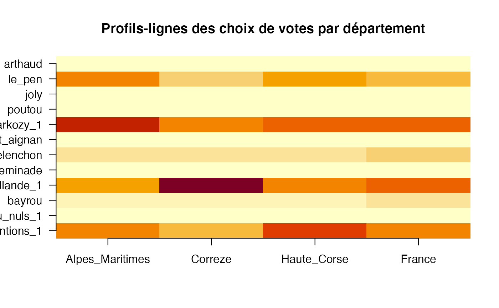
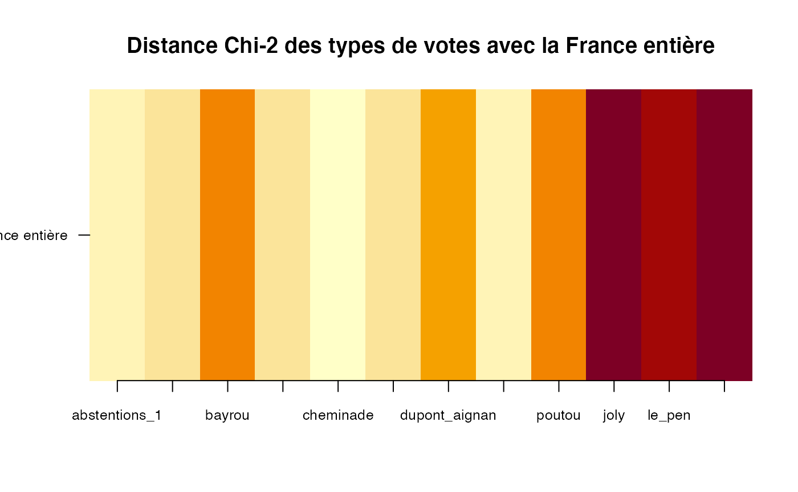
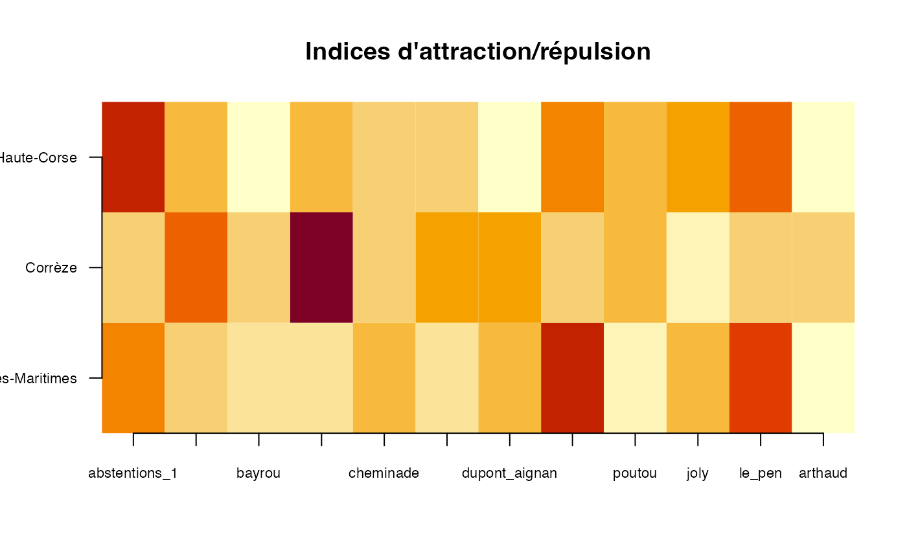
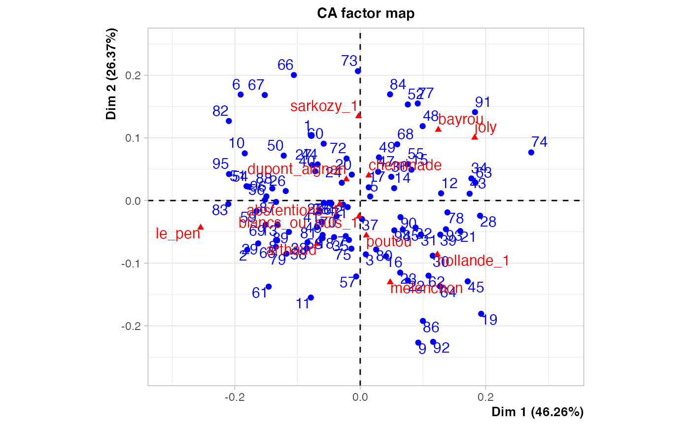
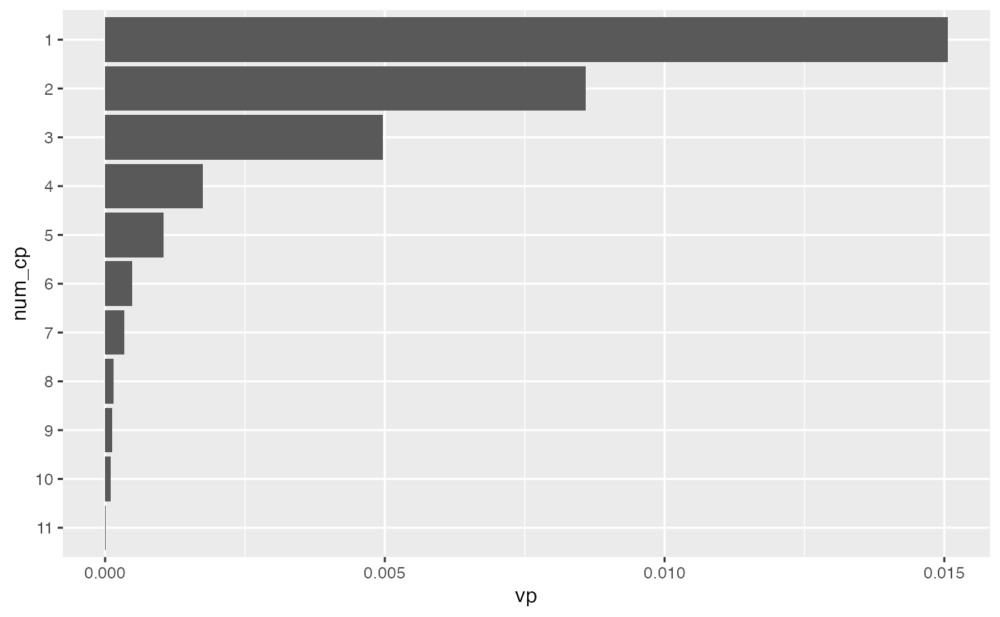
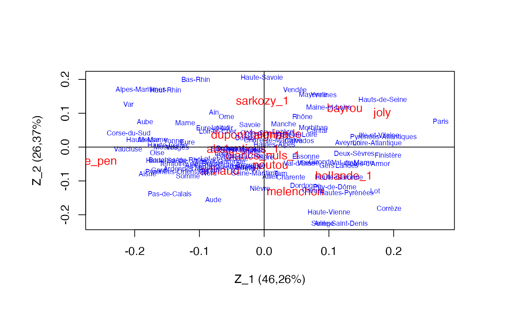

Chapitre 05. Exploration de données avec l’analyse factorielle des correspondances.
Tout le code avec R.
Christian Derquenne
2021-07-28
Source:vignettes/CodeChap05.Rmd
CodeChap05.Rmd

|
|
Description des données
Résultats au premier tour des élections présidentielles françaises de 2012
-
departement: nom du département (métropole) -
arthaud: candidate Arthaud -
bayrou: candidat Bayrou -
cheminade: candidat Cheminade -
dupont_aignan: candidat Dupont-Aignan -
hollande_1: candidat Hollande au 1er tour -
joly: candidate Joly -
le_pen: candidate Le Pen -
melenchon: candidat Mélenchon -
poutou: candidat Poutou -
sarkozy_1: candidat Sarkozy au 1er tour -
abstentions_1: abstentions du 1er tour -
blancs_ou_nuls_1: bulletins blancs ou nuls au 1er tour
Lecture des données
Exercice 5.1 : Analyse descriptive - les profils-lignes
Préparation du tableau de contingence et des profils colonnes et lignes
somme_lignes <- apply(presid_2012[,2:13],1,sum,na.rm=TRUE)
presid_2012_tab_cont <- data.frame(presid_2012,somme_lignes)
somme_colonnes <- apply(presid_2012[,2:13],2,sum,na.rm=TRUE)
somme_colonnes <- t(as.matrix(somme_colonnes))
departement <- "France"
somme_lignes <- apply(somme_colonnes,1,sum,na.rm=TRUE)
somme_colonnes <- data.frame(departement,somme_colonnes,somme_lignes)
presid_2012_tab_cont <- rbind(presid_2012_tab_cont,somme_colonnes)
prop_presid_2012_tab_cont <- presid_2012_tab_cont[,2:13]/presid_2012_tab_cont$somme_lignes
departement <- presid_2012_tab_cont$departement
prop_presid_2012_tab_cont <- data.frame(departement,prop_presid_2012_tab_cont)
profil_colonnes <- matrix(0,nrow=97,ncol=12)
for (i in 1:96)
{for (j in 1:12)
{profil_colonnes[i,j]=presid_2012_tab_cont[i,j+1]/presid_2012_tab_cont[97,j+1]
}
}
for (j in 1:12)
{profil_colonnes[97,j]=presid_2012_tab_cont[97,j+1]/sum(presid_2012_tab_cont[97,2:13])
}
colnames(profil_colonnes) <- c("abstentions_1","blancs_nuls_1","bayrou","hollande_1","cheminade","melenchon","dupont_aignan","sarkozy_1","poutou","joly","le_pen","arthaud")
rownames(profil_colonnes) <- departement[1:97]
profil_colonnes_France <- presid_2012_tab_cont$somme_lignes/sum(presid_2012_tab_cont$somme_lignes)
profil_colonnes <- data.frame(profil_colonnes,profil_colonnes_France)Calcul des profils-lignes Alpes-Maritimes, de la Corrèze, de la Haute-Corse et de la France métropolitaine
Alpes_Maritimes <- as.numeric(prop_presid_2012_tab_cont[6,2:13])
Correze <- as.numeric(prop_presid_2012_tab_cont[19,2:13])
Haute_Corse <- as.numeric(prop_presid_2012_tab_cont[96,2:13])
France <- as.numeric(prop_presid_2012_tab_cont[97,2:13])
trois_dept_france <- data.frame(Alpes_Maritimes,Correze,Haute_Corse,France)
rownames(trois_dept_france) <- names(prop_presid_2012_tab_cont[,2:13])Affichage des profils-lignes
round(trois_dept_france,3)
#> Alpes_Maritimes Correze Haute_Corse France
#> abstentions_1 0.206 0.146 0.257 0.186
#> blancs_ou_nuls_1 0.012 0.018 0.014 0.015
#> bayrou 0.052 0.058 0.034 0.073
#> hollande_1 0.150 0.359 0.190 0.225
#> cheminade 0.002 0.001 0.001 0.002
#> melenchon 0.066 0.088 0.073 0.090
#> dupont_aignan 0.012 0.014 0.008 0.015
#> sarkozy_1 0.291 0.181 0.226 0.216
#> poutou 0.005 0.008 0.008 0.009
#> joly 0.017 0.012 0.017 0.018
#> le_pen 0.184 0.111 0.170 0.146
#> arthaud 0.002 0.004 0.002 0.005Cartographie des profils-lignes
z <- t(as.matrix(trois_dept_france))
x <- seq(1,4,length.out=4)
y <- seq(1,12,length.out=12)
zr <- range(0,0.36)
oldpar <- par(no.readonly = TRUE)
#par(oma=c(0,4,0,4),bg="white")
image(x,y,z,zlim=zr,xlab="",ylab="",main="Profils-lignes des choix de votes par département",axes=FALSE)
axis(1, at = x,labels = rownames(z),las=1,cex.axis=1)
axis(2, at = y,labels = colnames(z),las=2,cex.axis=1)
par(oldpar)Exercice 5.2 : Analyse des écarts
Profils-colonnes des types de votes avec la France
d_chi2_type_vote_France <- matrix(0,nrow=96,ncol=1)
d_chi2_type_vote_France_all <- matrix(0,nrow=12,ncol=1)
for (i in 1:12)
{for (j in 1:96)
{d_chi2_type_vote_France[j]=1/profil_colonnes[j,13]*(profil_colonnes[j,i]-profil_colonnes[j,13])^2
}
d_chi2_type_vote_France_all[i] <- apply(d_chi2_type_vote_France,2,sum,na.rm=TRUE)
}
type_vote <- c("abstentions_1","blancs_nuls_1","bayrou","hollande_1","cheminade","melenchon","dupont_aignan","sarkozy_1","poutou","joly","le_pen","arthaud")
d_chi2_type_vote_France_all <- data.frame(type_vote,round(d_chi2_type_vote_France_all,4))
colnames(d_chi2_type_vote_France_all) <- c("Type de vote","Distance du Chi-2")
print(d_chi2_type_vote_France_all)
#> Type de vote Distance du Chi-2
#> 1 abstentions_1 0.5355
#> 2 blancs_nuls_1 0.5507
#> 3 bayrou 0.5962
#> 4 hollande_1 0.5481
#> 5 cheminade 0.5200
#> 6 melenchon 0.5536
#> 7 dupont_aignan 0.5879
#> 8 sarkozy_1 0.5398
#> 9 poutou 0.6027
#> 10 joly 0.6632
#> 11 le_pen 0.6402
#> 12 arthaud 0.6587
z <- as.matrix(d_chi2_type_vote_France_all[,2])
x <- seq(1,12,length.out=12)
y <- seq(1,1,length.out=1)
rownames(z) <- c("abstentions_1","blancs_nuls_1","bayrou","hollande_1","cheminade","melenchon","dupont_aignan","sarkozy_1","poutou","joly","le_pen","arthaud")
colnames(z) <- c("France entière")
oldpar <- par(no.readonly = TRUE)
#par(oma=c(0,2,8,0)+0.1,bg="white")
image(x,y,z,xlab="",ylab="",main="Distance Chi-2 des types de votes avec la France entière",axes=FALSE)
axis(1, at = x,labels = rownames(z),las=1,cex.axis=0.8)
axis(2, at = y,labels = colnames(z),las=2,cex.axis=0.8)
par(oldpar)Exercice 5.3 : Analyse des rapports - les indices d’attraction/répulsion
attrac_repul <- matrix(0,nrow=12,ncol=3)
for (i in 1:12)
{attrac_repul[i,1]=round(trois_dept_france[i,1]/trois_dept_france[i,4],3)
attrac_repul[i,2]=round(trois_dept_france[i,2]/trois_dept_france[i,4],3)
attrac_repul[i,3]=round(trois_dept_france[i,3]/trois_dept_france[i,4],3)
}
rownames(attrac_repul) <- c("abstentions_1","blancs_nuls_1","bayrou","hollande_1","cheminade","melenchon","dupont_aignan","sarkozy_1","poutou","joly","le_pen","arthaud")
colnames(attrac_repul) <- c("Alpes-Maritimes","Corrèze","Haute-Corse")
z <- as.matrix(attrac_repul)
x <- seq(1,12,length.out=12)
y <- seq(1,3,length.out=3)
image(x,y,z,xlab="",ylab="",main="Indices d'attraction/répulsion",axes=FALSE)
axis(1, at = x,labels = rownames(z),las=1,cex.axis=0.7)
axis(2, at = y,labels = colnames(z),las=2,cex.axis=0.7)
Exercice 5.4 : Le Chi-2 et ses contributions
Calcul de la distance du Chi-2
chisq.test(presid_2012[,2:13])
#>
#> Pearson's Chi-squared test
#>
#> data: presid_2012[, 2:13]
#> X-squared = 1408155, df = 1045, p-value < 2.2e-16Calcul des contributions au Chi-2
attrac_repul <- matrix(0,nrow=12,ncol=96)
for (i in 1:12)
{for (j in 1:96)
{attrac_repul[i,j]=prop_presid_2012_tab_cont[j,i+1]/prop_presid_2012_tab_cont[97,i+1]}
}
d_ij <- t(attrac_repul)
f_j <- as.matrix(presid_2012_tab_cont[97,2:13]/sum(presid_2012_tab_cont[97,2:13]))
fi_ <- as.matrix(presid_2012_tab_cont[1:97,14]/presid_2012_tab_cont[97,14])
fi_x_f_j <- fi_%*%f_j
ecart_indep <- matrix(0,nrow=96,ncol=12)
for (i in 1:96)
{for (j in 1:12)
{ecart_indep[i,j]=(d_ij[i,j]-1)^2*fi_x_f_j[i,j]
}
}
n <- presid_2012_tab_cont[97,14]Calcul de la statistique du Chi-2
d_2 = n*sum(ecart_indep)
contrib_chi_2 <- matrix(0,nrow=96,ncol=12)
for (i in 1:96)
{for (j in 1:12)
{contrib_chi_2[i,j]=n*ecart_indep[i,j]/d_2*100
}
}
colnames(contrib_chi_2) <- c("abstentions_1","blancs_nuls_1","bayrou","hollande_1","cheminade","melenchon","dupont_aignan","sarkozy_1","poutou","joly","le_pen","arthaud")
rownames(contrib_chi_2) <- departement[1:96]Affiche l’ensemble des contributions au Chi-2
round(contrib_chi_2,3)
#> abstentions_1 blancs_nuls_1 bayrou hollande_1 cheminade
#> Ain 0.052 0.004 0.035 0.190 0.001
#> Aisne 0.008 0.003 0.152 0.012 0.000
#> Allier 0.009 0.027 0.004 0.016 0.000
#> Alpes-de-Haute-Provence 0.013 0.002 0.020 0.028 0.000
#> Hautes-Alpes 0.010 0.003 0.005 0.023 0.000
#> Alpes-Maritimes 0.108 0.029 0.320 1.304 0.002
#> Ardèche 0.072 0.003 0.001 0.008 0.000
#> Ardennes 0.029 0.005 0.041 0.000 0.000
#> Ariège 0.033 0.000 0.038 0.128 0.000
#> Aube 0.000 0.004 0.009 0.119 0.000
#> Aude 0.045 0.002 0.146 0.049 0.001
#> Aveyron 0.128 0.035 0.204 0.029 0.000
#> Bouches-du-Rhône 0.046 0.033 0.680 0.391 0.003
#> Calvados 0.061 0.005 0.041 0.037 0.000
#> Cantal 0.015 0.006 0.035 0.026 0.000
#> Charente 0.005 0.010 0.002 0.124 0.000
#> Charente-Maritime 0.005 0.004 0.000 0.002 0.000
#> Cher 0.009 0.006 0.003 0.015 0.000
#> Corrèze 0.113 0.006 0.043 1.069 0.002
#> Côte-d'Or 0.036 0.000 0.003 0.000 0.000
#> Côtes-d'Armor 0.323 0.000 0.110 0.405 0.000
#> Creuse 0.003 0.010 0.004 0.072 0.000
#> Dordogne 0.143 0.020 0.012 0.171 0.000
#> Doubs 0.028 0.005 0.001 0.015 0.000
#> Drôme 0.042 0.000 0.000 0.045 0.000
#> Eure 0.000 0.000 0.015 0.098 0.000
#> Eure-et-Loir 0.002 0.000 0.000 0.038 0.000
#> Finistère 0.201 0.003 0.259 0.628 0.002
#> Gard 0.043 0.003 0.145 0.130 0.000
#> Haute-Garonne 0.142 0.005 0.008 0.536 0.000
#> Gers 0.108 0.011 0.014 0.083 0.000
#> Gironde 0.064 0.005 0.027 0.356 0.000
#> Hérault 0.018 0.003 0.234 0.020 0.000
#> Ille-et-Vilaine 0.286 0.002 0.575 0.339 0.000
#> Indre 0.002 0.021 0.000 0.011 0.001
#> Indre-et-Loire 0.028 0.000 0.040 0.002 0.001
#> Isère 0.047 0.000 0.000 0.000 0.001
#> Jura 0.035 0.004 0.005 0.032 0.001
#> Landes 0.067 0.002 0.044 0.186 0.001
#> Loir-et-Cher 0.019 0.002 0.008 0.036 0.000
#> Loire 0.024 0.002 0.015 0.018 0.000
#> Haute-Loire 0.067 0.035 0.060 0.003 0.000
#> Loire-Atlantique 0.294 0.000 0.367 0.428 0.000
#> Loiret 0.005 0.000 0.001 0.056 0.000
#> Lot 0.117 0.004 0.004 0.189 0.000
#> Lot-et-Garonne 0.033 0.004 0.000 0.002 0.000
#> Lozère 0.034 0.001 0.020 0.004 0.000
#> Maine-et-Loire 0.191 0.056 0.543 0.000 0.001
#> Manche 0.041 0.001 0.116 0.002 0.002
#> Marne 0.079 0.007 0.000 0.171 0.000
#> Haute-Marne 0.006 0.001 0.015 0.062 0.000
#> Mayenne 0.078 0.041 0.344 0.010 0.000
#> Meurthe-et-Moselle 0.038 0.014 0.012 0.004 0.001
#> Meuse 0.001 0.000 0.000 0.060 0.001
#> Morbihan 0.208 0.000 0.150 0.018 0.002
#> Moselle 0.296 0.002 0.003 0.314 0.000
#> Nièvre 0.002 0.000 0.033 0.060 0.000
#> Nord 0.835 0.012 0.454 0.065 0.002
#> Oise 0.004 0.000 0.089 0.125 0.000
#> Orne 0.032 0.001 0.034 0.046 0.000
#> Pas-de-Calais 0.093 0.000 0.565 0.012 0.003
#> Puy-de-Dôme 0.124 0.023 0.031 0.320 0.001
#> Pyrénées-Atlantiques 0.014 0.013 1.318 0.041 0.000
#> Hautes-Pyrénées 0.023 0.003 0.028 0.118 0.000
#> Pyrénées-Orientales 0.002 0.000 0.168 0.028 0.000
#> Bas-Rhin 0.068 0.000 0.293 1.203 0.002
#> Haut-Rhin 0.077 0.003 0.117 0.995 0.006
#> Rhône 0.002 0.022 0.093 0.026 0.000
#> Haute-Saône 0.022 0.025 0.024 0.006 0.001
#> Saône-et-Loire 0.001 0.024 0.005 0.001 0.000
#> Sarthe 0.010 0.053 0.000 0.000 0.000
#> Savoie 0.033 0.007 0.014 0.099 0.001
#> Haute-Savoie 0.001 0.000 0.212 0.598 0.005
#> Paris 0.071 0.170 0.000 1.035 0.001
#> Seine-Maritime 0.007 0.001 0.107 0.021 0.000
#> Seine-et-Marne 0.386 0.008 0.052 0.045 0.000
#> Yvelines 0.230 0.041 0.173 0.047 0.001
#> Deux-Sèvres 0.066 0.031 0.073 0.200 0.000
#> Somme 0.004 0.000 0.084 0.002 0.001
#> Tarn 0.164 0.020 0.003 0.088 0.000
#> Tarn-et-Garonne 0.088 0.008 0.003 0.002 0.000
#> Var 0.018 0.023 0.309 1.132 0.003
#> Vaucluse 0.007 0.001 0.137 0.244 0.001
#> Vendée 0.292 0.055 0.363 0.049 0.000
#> Vienne 0.020 0.011 0.005 0.112 0.000
#> Haute-Vienne 0.100 0.070 0.018 0.419 0.000
#> Vosges 0.004 0.013 0.001 0.064 0.001
#> Yonne 0.004 0.000 0.009 0.092 0.000
#> Territoire_de_Belfort 0.002 0.001 0.001 0.011 0.000
#> Essonne 0.141 0.009 0.000 0.034 0.000
#> Hauts-de-Seine 0.137 0.028 0.094 0.036 0.000
#> Seine-Saint-Denis 1.766 0.006 0.614 0.689 0.002
#> Val-de-Marne 0.439 0.025 0.025 0.170 0.000
#> Val-d'Oise 0.522 0.005 0.068 0.092 0.000
#> Corse-du-Sud 0.196 0.002 0.109 0.124 0.000
#> Haute-Corse 0.228 0.001 0.182 0.046 0.001
#> melenchon dupont_aignan sarkozy_1 poutou joly le_pen
#> Ain 0.042 0.028 0.134 0.002 0.000 0.099
#> Aisne 0.026 0.002 0.073 0.003 0.119 0.713
#> Allier 0.073 0.002 0.044 0.001 0.031 0.000
#> Alpes-de-Haute-Provence 0.107 0.000 0.003 0.004 0.015 0.030
#> Hautes-Alpes 0.048 0.002 0.001 0.002 0.053 0.000
#> Alpes-Maritimes 0.331 0.016 1.373 0.083 0.005 0.513
#> Ardèche 0.129 0.003 0.032 0.008 0.023 0.043
#> Ardennes 0.048 0.000 0.041 0.001 0.058 0.196
#> Ariège 0.220 0.002 0.145 0.007 0.013 0.003
#> Aube 0.117 0.008 0.044 0.002 0.038 0.288
#> Aude 0.064 0.008 0.131 0.002 0.001 0.248
#> Aveyron 0.024 0.000 0.001 0.006 0.001 0.088
#> Bouches-du-Rhône 0.269 0.093 0.001 0.087 0.011 0.968
#> Calvados 0.005 0.012 0.010 0.011 0.001 0.043
#> Cantal 0.028 0.001 0.011 0.001 0.014 0.032
#> Charente 0.000 0.005 0.081 0.013 0.012 0.002
#> Charente-Maritime 0.017 0.011 0.014 0.017 0.000 0.009
#> Cher 0.062 0.005 0.029 0.000 0.030 0.009
#> Corrèze 0.001 0.000 0.077 0.001 0.032 0.110
#> Côte-d'Or 0.045 0.003 0.033 0.001 0.002 0.009
#> Côtes-d'Armor 0.056 0.000 0.034 0.013 0.048 0.222
#> Creuse 0.016 0.000 0.045 0.005 0.006 0.011
#> Dordogne 0.137 0.002 0.068 0.010 0.000 0.004
#> Doubs 0.000 0.000 0.027 0.000 0.001 0.016
#> Drôme 0.021 0.003 0.001 0.000 0.038 0.107
#> Eure 0.018 0.012 0.006 0.010 0.039 0.263
#> Eure-et-Loir 0.083 0.016 0.031 0.001 0.035 0.050
#> Finistère 0.014 0.000 0.041 0.046 0.103 0.727
#> Gard 0.138 0.018 0.030 0.004 0.002 0.948
#> Haute-Garonne 0.257 0.016 0.226 0.000 0.150 0.173
#> Gers 0.014 0.000 0.008 0.001 0.000 0.011
#> Gironde 0.022 0.012 0.066 0.142 0.010 0.183
#> Hérault 0.171 0.037 0.033 0.005 0.014 0.414
#> Ille-et-Vilaine 0.010 0.002 0.000 0.004 0.182 0.634
#> Indre 0.000 0.007 0.030 0.006 0.029 0.009
#> Indre-et-Loire 0.001 0.007 0.024 0.004 0.000 0.054
#> Isère 0.071 0.003 0.049 0.005 0.131 0.024
#> Jura 0.023 0.017 0.001 0.003 0.001 0.040
#> Landes 0.037 0.001 0.020 0.019 0.011 0.132
#> Loir-et-Cher 0.020 0.009 0.016 0.004 0.016 0.064
#> Loire 0.000 0.016 0.029 0.001 0.011 0.197
#> Haute-Loire 0.001 0.006 0.013 0.004 0.001 0.041
#> Loire-Atlantique 0.029 0.002 0.000 0.008 0.229 0.936
#> Loiret 0.064 0.013 0.056 0.004 0.015 0.080
#> Lot 0.103 0.002 0.055 0.009 0.010 0.069
#> Lot-et-Garonne 0.005 0.000 0.007 0.007 0.006 0.095
#> Lozère 0.009 0.000 0.005 0.001 0.003 0.000
#> Maine-et-Loire 0.075 0.037 0.172 0.021 0.003 0.271
#> Manche 0.029 0.029 0.044 0.009 0.016 0.021
#> Marne 0.172 0.003 0.033 0.000 0.062 0.148
#> Haute-Marne 0.045 0.014 0.001 0.002 0.029 0.187
#> Mayenne 0.083 0.010 0.098 0.004 0.000 0.065
#> Meurthe-et-Moselle 0.009 0.001 0.105 0.003 0.030 0.100
#> Meuse 0.040 0.002 0.000 0.008 0.016 0.254
#> Morbihan 0.012 0.002 0.057 0.019 0.057 0.079
#> Moselle 0.172 0.000 0.071 0.011 0.071 0.688
#> Nièvre 0.003 0.001 0.077 0.001 0.017 0.006
#> Nord 0.058 0.065 0.429 0.009 0.162 0.399
#> Oise 0.042 0.003 0.004 0.001 0.081 0.751
#> Orne 0.050 0.027 0.049 0.011 0.010 0.031
#> Pas-de-Calais 0.000 0.012 0.711 0.006 0.318 1.526
#> Puy-de-Dôme 0.220 0.000 0.235 0.003 0.003 0.071
#> Pyrénées-Atlantiques 0.011 0.019 0.107 0.083 0.048 0.554
#> Hautes-Pyrénées 0.157 0.001 0.144 0.005 0.001 0.052
#> Pyrénées-Orientales 0.039 0.019 0.018 0.001 0.002 0.372
#> Bas-Rhin 0.665 0.003 0.551 0.009 0.035 0.145
#> Haut-Rhin 0.432 0.008 0.178 0.000 0.017 0.330
#> Rhône 0.014 0.003 0.350 0.053 0.111 0.335
#> Haute-Saône 0.020 0.003 0.008 0.005 0.020 0.291
#> Saône-et-Loire 0.011 0.005 0.013 0.001 0.039 0.031
#> Sarthe 0.005 0.015 0.002 0.007 0.015 0.011
#> Savoie 0.002 0.010 0.028 0.000 0.109 0.009
#> Haute-Savoie 0.110 0.039 0.509 0.000 0.215 0.050
#> Paris 0.005 0.265 0.625 0.150 1.091 5.740
#> Seine-Maritime 0.147 0.000 0.087 0.006 0.093 0.006
#> Seine-et-Marne 0.023 0.019 0.014 0.013 0.033 0.007
#> Yvelines 0.276 0.005 0.758 0.067 0.005 1.107
#> Deux-Sèvres 0.008 0.019 0.011 0.031 0.003 0.162
#> Somme 0.001 0.006 0.076 0.004 0.111 0.402
#> Tarn 0.029 0.001 0.045 0.003 0.000 0.019
#> Tarn-et-Garonne 0.001 0.000 0.003 0.001 0.002 0.121
#> Var 0.195 0.009 0.907 0.031 0.031 0.952
#> Vaucluse 0.000 0.011 0.004 0.007 0.000 0.972
#> Vendée 0.148 0.057 0.543 0.030 0.012 0.091
#> Vienne 0.000 0.006 0.031 0.007 0.000 0.026
#> Haute-Vienne 0.164 0.001 0.243 0.001 0.012 0.015
#> Vosges 0.035 0.029 0.016 0.024 0.019 0.316
#> Yonne 0.021 0.011 0.001 0.001 0.017 0.206
#> Territoire_de_Belfort 0.000 0.000 0.023 0.001 0.002 0.079
#> Essonne 0.017 0.546 0.080 0.023 0.000 0.290
#> Hauts-de-Seine 0.064 0.074 1.017 0.109 0.038 2.891
#> Seine-Saint-Denis 0.610 0.094 1.389 0.038 0.015 0.846
#> Val-de-Marne 0.167 0.013 0.045 0.046 0.011 1.159
#> Val-d'Oise 0.000 0.010 0.071 0.022 0.020 0.273
#> Corse-du-Sud 0.030 0.022 0.009 0.000 0.001 0.085
#> Haute-Corse 0.028 0.026 0.004 0.001 0.001 0.032
#> arthaud
#> Ain 0.000
#> Aisne 0.027
#> Allier 0.007
#> Alpes-de-Haute-Provence 0.001
#> Hautes-Alpes 0.000
#> Alpes-Maritimes 0.067
#> Ardèche 0.002
#> Ardennes 0.007
#> Ariège 0.000
#> Aube 0.000
#> Aude 0.000
#> Aveyron 0.000
#> Bouches-du-Rhône 0.062
#> Calvados 0.006
#> Cantal 0.000
#> Charente 0.005
#> Charente-Maritime 0.000
#> Cher 0.008
#> Corrèze 0.003
#> Côte-d'Or 0.000
#> Côtes-d'Armor 0.009
#> Creuse 0.002
#> Dordogne 0.000
#> Doubs 0.003
#> Drôme 0.010
#> Eure 0.004
#> Eure-et-Loir 0.003
#> Finistère 0.002
#> Gard 0.004
#> Haute-Garonne 0.017
#> Gers 0.000
#> Gironde 0.012
#> Hérault 0.020
#> Ille-et-Vilaine 0.012
#> Indre 0.015
#> Indre-et-Loire 0.006
#> Isère 0.001
#> Jura 0.005
#> Landes 0.002
#> Loir-et-Cher 0.005
#> Loire 0.001
#> Haute-Loire 0.007
#> Loire-Atlantique 0.001
#> Loiret 0.000
#> Lot 0.000
#> Lot-et-Garonne 0.001
#> Lozère 0.000
#> Maine-et-Loire 0.025
#> Manche 0.011
#> Marne 0.002
#> Haute-Marne 0.006
#> Mayenne 0.012
#> Meurthe-et-Moselle 0.004
#> Meuse 0.003
#> Morbihan 0.003
#> Moselle 0.021
#> Nièvre 0.003
#> Nord 0.019
#> Oise 0.024
#> Orne 0.008
#> Pas-de-Calais 0.081
#> Puy-de-Dôme 0.004
#> Pyrénées-Atlantiques 0.005
#> Hautes-Pyrénées 0.000
#> Pyrénées-Orientales 0.002
#> Bas-Rhin 0.004
#> Haut-Rhin 0.002
#> Rhône 0.008
#> Haute-Saône 0.008
#> Saône-et-Loire 0.002
#> Sarthe 0.015
#> Savoie 0.001
#> Haute-Savoie 0.007
#> Paris 0.108
#> Seine-Maritime 0.017
#> Seine-et-Marne 0.012
#> Yvelines 0.047
#> Deux-Sèvres 0.009
#> Somme 0.044
#> Tarn 0.000
#> Tarn-et-Garonne 0.001
#> Var 0.036
#> Vaucluse 0.012
#> Vendée 0.005
#> Vienne 0.007
#> Haute-Vienne 0.003
#> Vosges 0.010
#> Yonne 0.003
#> Territoire_de_Belfort 0.002
#> Essonne 0.020
#> Hauts-de-Seine 0.070
#> Seine-Saint-Denis 0.008
#> Val-de-Marne 0.032
#> Val-d'Oise 0.016
#> Corse-du-Sud 0.009
#> Haute-Corse 0.008Calcul le couple (département,type de vote) qui a la plus petite contribution au Chi-2
departement[round(which.min(contrib_chi_2)%%96,0)]
#> [1] Oise
#> 97 Levels: Ain Aisne Allier Alpes-de-Haute-Provence Alpes-Maritimes ... France
type_vote[round(which.min(contrib_chi_2)/96,0)]
#> [1] "blancs_nuls_1"Calcul le couple (département,type de vote) qui a la plus grande contribution au Chi-2
Exercice 5.5 : La force de la dépendance - le V de Cramer
Calcul de la distance du Chi-2
chi_2 <- chisq.test(presid_2012[,2:13])$statistic
p=96
q=12
V_cramer <- sqrt(chi_2/(n*min(p-1,q-1)))Exercice 5.6 : Inerties expliquées et résiduelles
AFC sur les données avec le package FactoMineR
res.AFC <- FactoMineR::CA(presid_2012[,2:13])
Exercice 5.7 : Contributions et reconstitutions des types de vote
Contributions des types de votes
round(res.AFC$col$contrib,2)
#> Dim 1 Dim 2 Dim 3 Dim 4 Dim 5
#> abstentions_1 1.32 0.08 54.83 18.11 5.82
#> blancs_ou_nuls_1 0.00 0.11 4.02 1.59 0.00
#> bayrou 7.56 10.92 19.25 14.65 19.24
#> hollande_1 22.60 19.40 0.70 0.12 26.02
#> cheminade 0.00 0.04 0.05 0.05 0.13
#> melenchon 1.37 17.85 0.00 19.65 19.66
#> dupont_aignan 0.05 0.19 3.37 6.39 0.03
#> sarkozy_1 0.01 45.50 0.64 11.19 12.61
#> poutou 0.01 0.34 5.64 3.11 0.05
#> joly 4.02 2.14 0.00 18.77 16.24
#> le_pen 62.92 3.19 9.11 0.91 0.02
#> arthaud 0.14 0.25 2.38 5.46 0.18Reconstitutions des types de votes
round(100*res.AFC$col$cos2,2)
#> Dim 1 Dim 2 Dim 3 Dim 4 Dim 5
#> abstentions_1 6.02 0.20 82.34 9.51 1.84
#> blancs_ou_nuls_1 0.02 2.58 52.40 7.24 0.01
#> bayrou 32.23 26.55 27.05 7.20 5.68
#> hollande_1 62.93 30.79 0.64 0.04 5.01
#> cheminade 1.85 15.95 12.78 4.19 6.99
#> melenchon 8.54 63.42 0.00 14.12 8.48
#> dupont_aignan 1.12 2.60 26.18 17.39 0.04
#> sarkozy_1 0.04 90.94 0.74 4.52 3.06
#> poutou 0.18 6.07 58.89 11.38 0.11
#> joly 40.84 12.36 0.01 21.95 11.40
#> le_pen 92.45 2.67 4.41 0.15 0.00
#> arthaud 5.99 6.03 33.08 26.52 0.51Exercice 5.8 : Nombre de dimensions à retenir ?
Histogramme des valeurs propres
vp <- as.matrix(res.AFC$eig[,1])
colnames(vp) <- c("vp")
num_cp <- 11:1
histo_vp <- data.frame(num_cp,vp)
histo_vp <- histo_vp[order(histo_vp$vp, decreasing = TRUE), ]
library(ggplot2)
ggplot(data=histo_vp, aes(x=num_cp, y=vp)) + geom_bar(stat="identity") + coord_flip() + scale_x_discrete(limits=c("11","10","9","8","7","6","5","4","3","2","1"))
Exercice 5.9 : Analyse des liens entre les types de vote et les départements
Plan 1 : coordonnées factorielles
coord <- res.AFC$row$coord[,1:2]
modal <- presid_2012$departement
coord_dept <- data.frame(modal,coord)
coord <- res.AFC$col$coord[,1:2]
modal <- c("abstentions_1","blancs_nuls_1","bayrou","hollande_1","cheminade","melenchon","dupont_aignan","sarkozy_1","poutou","joly","le_pen","arthaud")
coord_vote <- data.frame(modal,coord)
graph <- rbind(coord_vote,coord_dept)
oldpar <- par(no.readonly = TRUE)
par(oma=c(0,1,0,1)+1,bg="white")
plot (graph[,2], graph[,3],type="n",xlab="Z_1 (46,26%)",ylab="Z_2 (26,37%)",main="")
text (graph[1:12,2], graph[1:12,3], graph[1:12,1],col='red',cex=1)
text (graph[13:108,2], graph[13:108,3], graph[13:108,1],col='blue',cex=0.6)
abline(h=0)
abline(v=0)
par(oldpar)